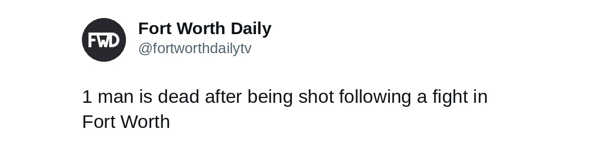
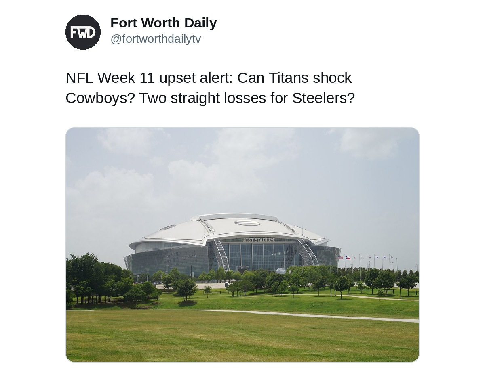
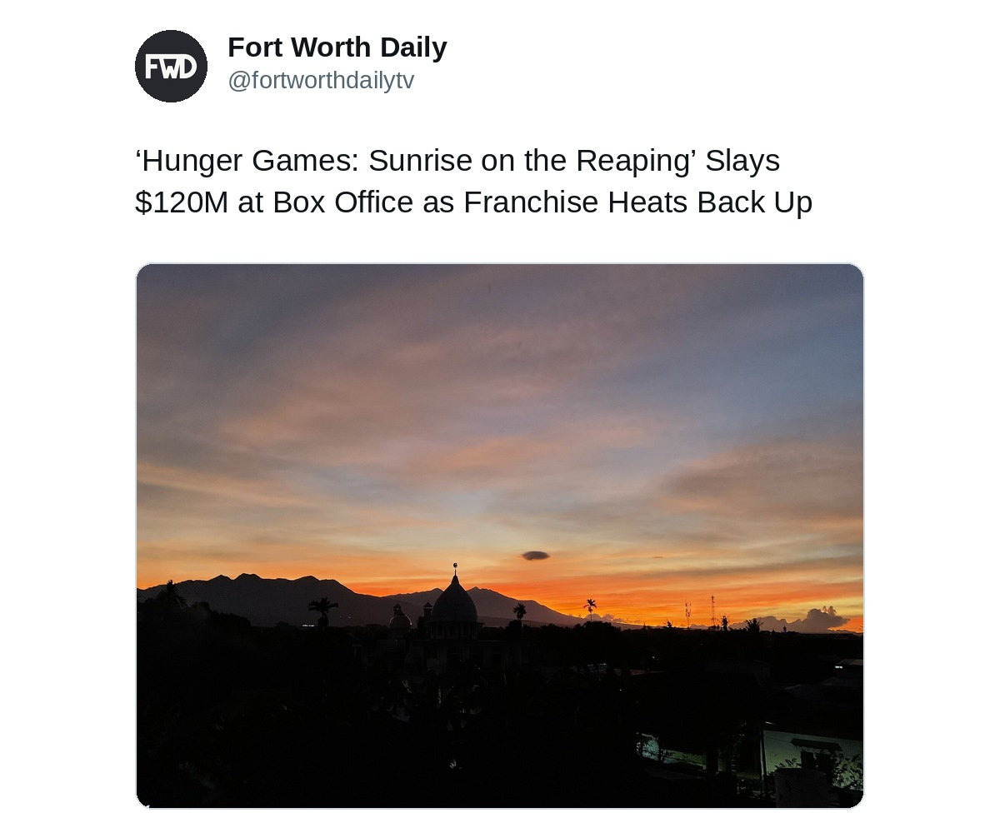

Officers say the suspect is the one that called 9-1-1 after the altercation.

👍 ❤️ 😮 ✅ written to disk (dry run)
story + scoring
{
"source": "WFAA",
"kind": "rss",
"score": 1.0277,
"relevance": 2,
"url": "https://www.wfaa.com/article/news/local/fort-worth-shooting-fatal-the-heights-one-dead/287-9fdd12a8-06c9-4321-bd1e-a8d7bba86af3",
"image_license": "card",
"image_credit": "Card: FWD"
}The Jets could also send the Chargers back into the loss column As expected, following a Week 9 where favorites owned the slate, underdogs bit back in Week 10.

👍 ❤️ 😮 ✅ written to disk (dry run)
story + scoring
{
"source": "CBS Sports",
"kind": "rss",
"score": 0.7361,
"relevance": 2,
"url": "https://www.cbssports.com/nfl/news/nfl-week-11-upset-alert-predictions-steelers-titans-cowboys/",
"image_license": "wikimedia-cc",
"image_credit": "Photo: Michael Barera via Wikimedia Commons (CC BY-SA 4.0)"
}The sixth film in the Lionsgate series rebounded after 2023's 'The Ballad of Songbirds & Snakes,' while freshly expanded 'I Play Rocky' and newcomer 'Elsinore' also came out swinging.

👍 ❤️ 😮 ✅ written to disk (dry run)
story + scoring
{
"source": "The Hollywood Reporter",
"kind": "rss",
"score": 0.3551,
"relevance": 2,
"url": "https://www.hollywoodreporter.com/movies/movie-news/hunger-games-sunrise-on-the-reaping-box-office-opening-win-2-1236760511/",
"image_license": "wikimedia-cc",
"image_credit": "Photo: Thelightfull via Wikimedia Commons (CC BY-SA 4.0)"
}